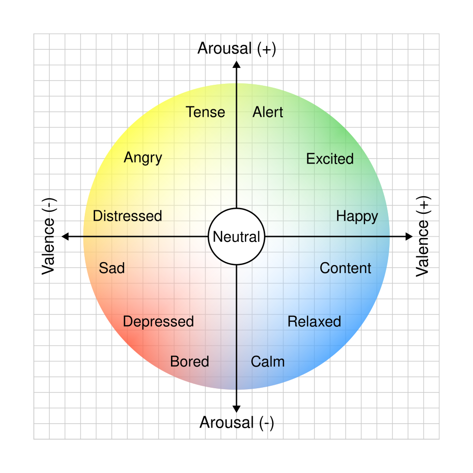
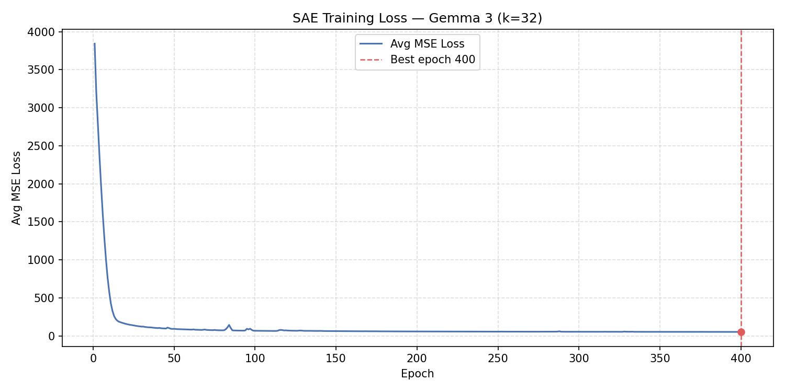
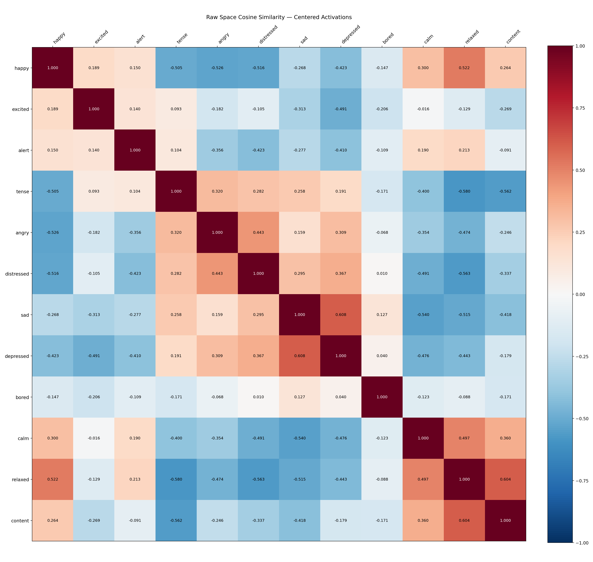
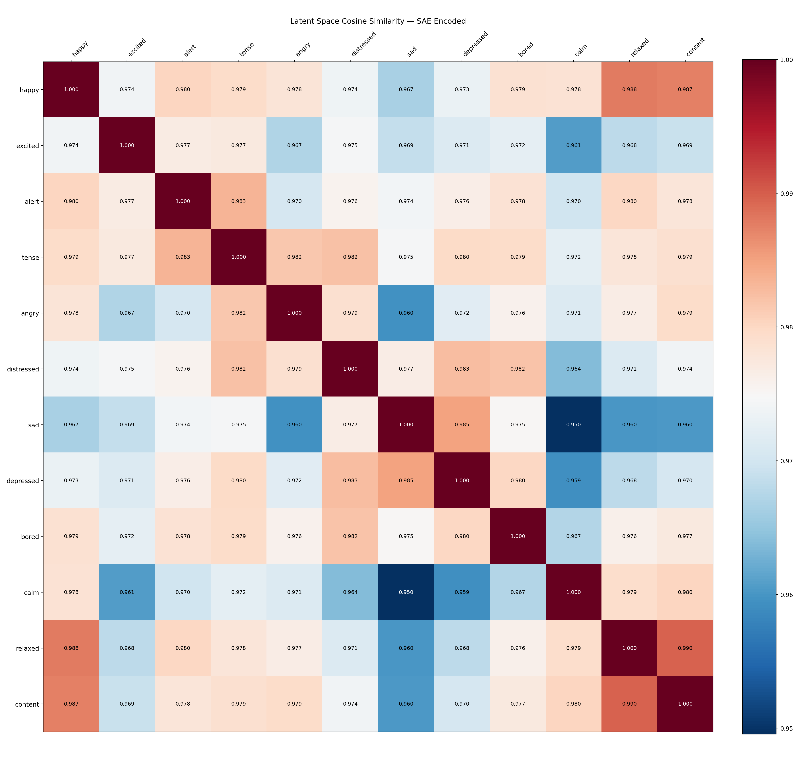
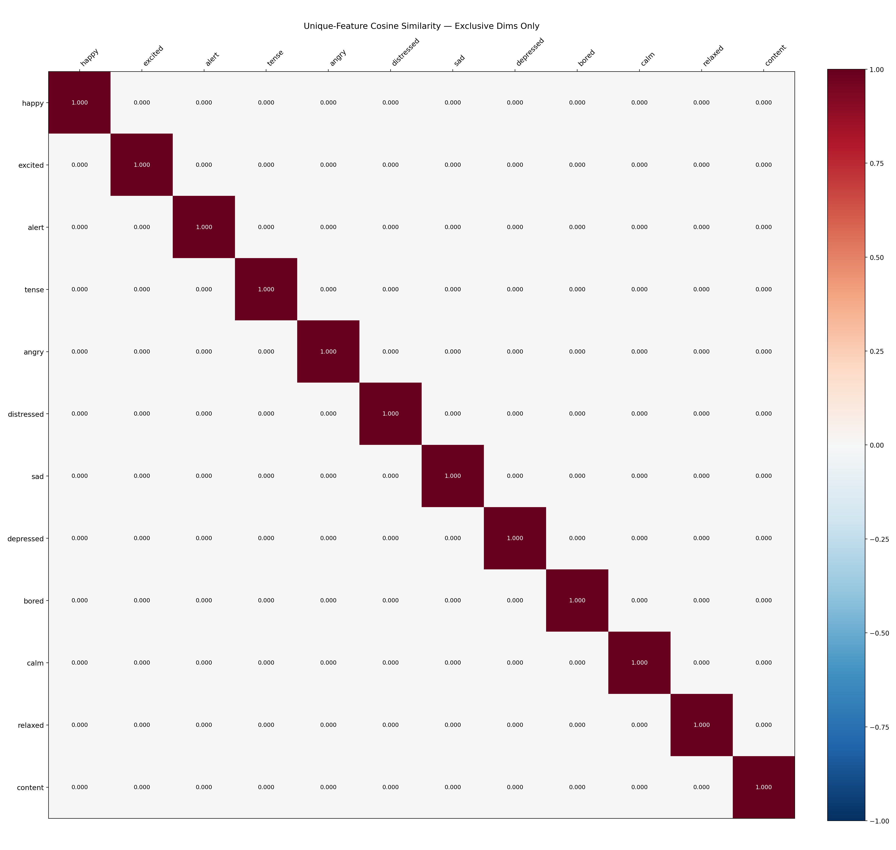
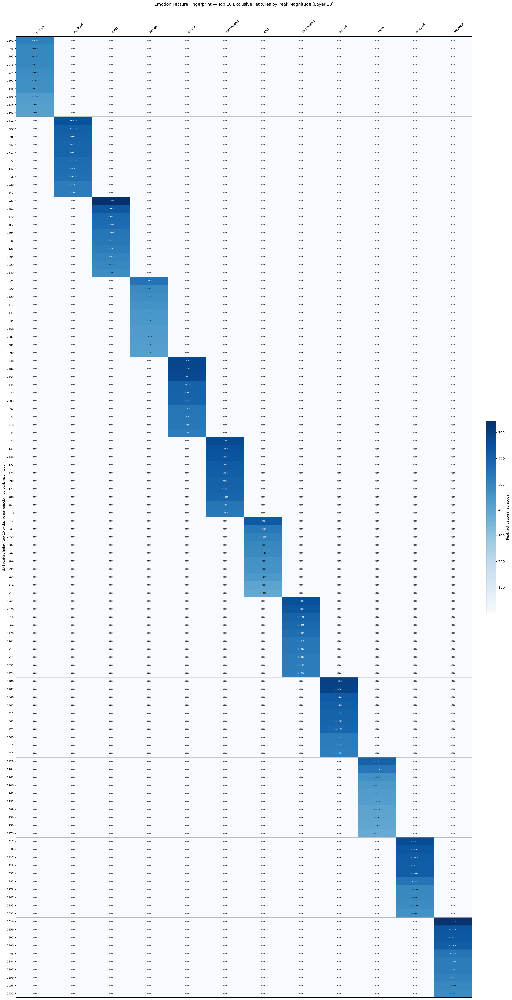
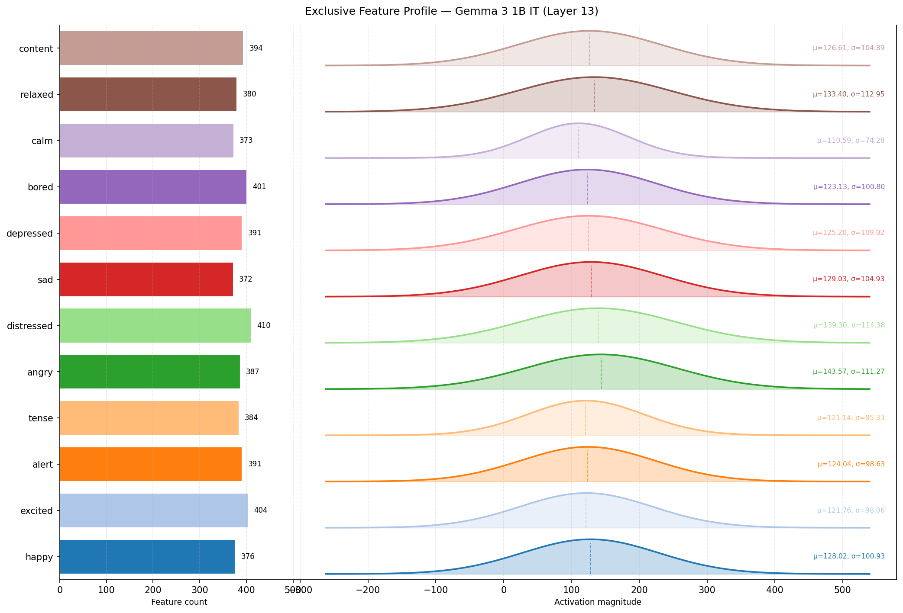
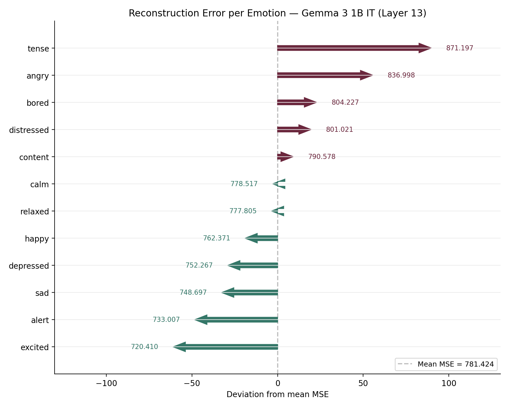
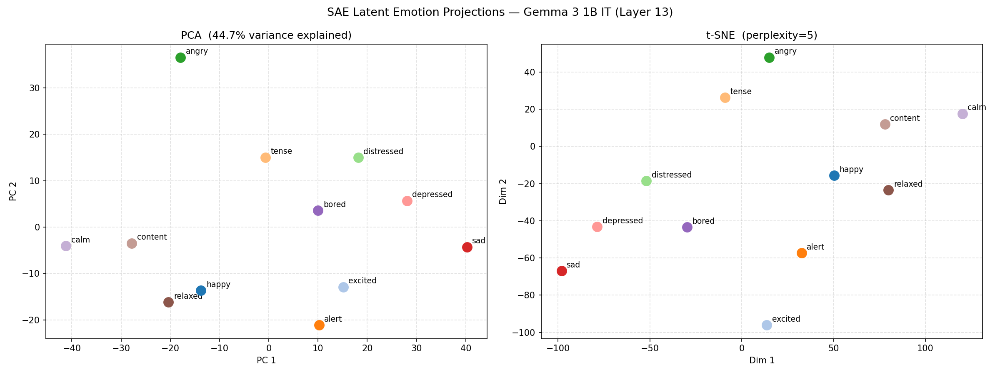
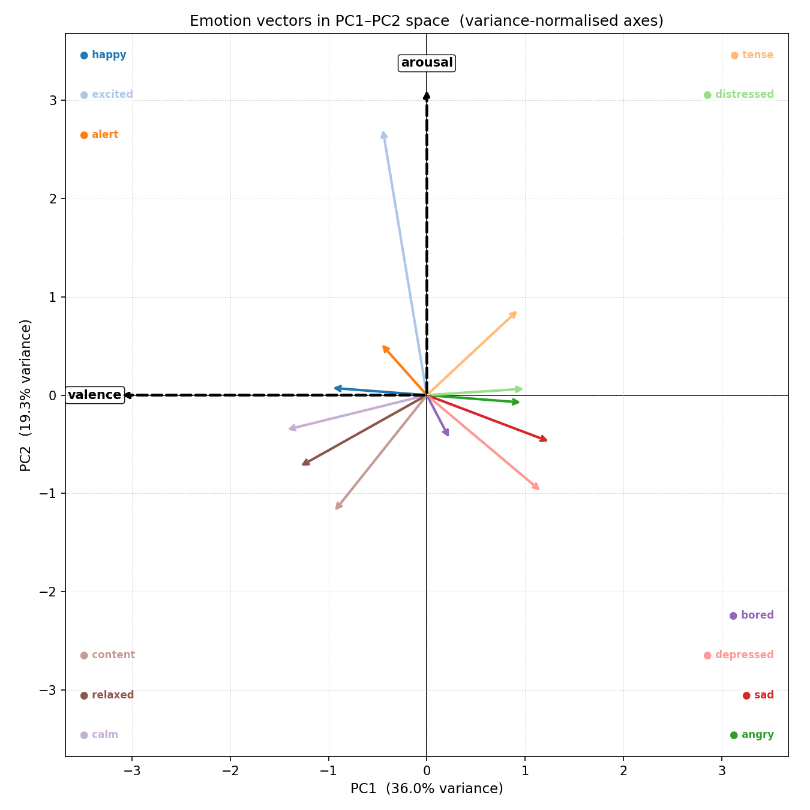

This project investigates how emotional states are encoded inside the hidden layers of Google's Gemma 3 1B IT language model. Using a Sparse Autoencoder (SAE) trained on mid-layer activations, we discover sparse, disjoint feature clusters that correspond to 12 distinct emotions, extract two orthogonal axes (valence and arousal) that mirror Russell's circumplex model, and demonstrate precise causal steering of the model's output along those axes — all without modifying any model weights.
The theoretical foundation of this project is Russell's (1980) circumplex model of affect, which proposes that all human emotions can be located in a two-dimensional space defined by:
The 12 emotions studied here are chosen to tile this circumplex evenly:
| Quadrant | Emotions |
|---|---|
| High valence, high arousal | happy, excited |
| Low valence, high arousal | tense, angry, distressed |
| Low valence, low arousal | sad, depressed |
| Low valence, neutral arousal | bored |
| High valence, low arousal | calm, relaxed, content |
| High valence, neutral arousal | alert |

Language model hidden states live in a high-dimensional space (d_model = 1152 for Gemma 3 1B) and are believed to
be superposed — many conceptual features are packed into the same dimensions simultaneously,
making direct interpretation difficult. A Sparse Autoencoder (SAE) with a top-k activation
constraint decomposes these dense vectors into a larger, overcomplete latent space (d_latent =
2304) where only k = 32 features are active at once. This forces the model to find a
sparse, near-orthogonal basis where each feature ideally corresponds to a single interpretable
concept.
Gemma 3 1B has 26 transformer layers. Layer 13 (the mid-point) is the "mid-logic" layer — early enough that syntactic surface features are still being processed but deep enough that semantic and contextual representations have stabilised. This makes it the richest layer for capturing abstract emotional content.
Run setup-env.bat once to create the Conda environment:
setup-env.bat
This creates a Conda environment named llm-emotions with:
| Package | Version |
|---|---|
| Python | 3.11.6 |
| PyTorch | 2.10.0 + CUDA 12.6 |
| Transformers | 5.8.1 |
| Accelerate | latest |
| scikit-learn | 1.8.0 |
| Matplotlib | 3.10.9 |
The environment is optimised for an NVIDIA RTX 4070 (or any CUDA 12.6-capable GPU). All model
weights are loaded locally (local_files_only=True), so the Gemma 3 1B IT checkpoint must be
pre-downloaded to the HuggingFace cache before running the pipeline.
llm-emotions/
├── workflow.bat ← Master pipeline runner (5 ordered steps)
├── setup-env.bat ← One-time Conda environment setup
├── collect-activations.py ← Stage 1: generate stories + record hidden states
├── train-sae.py ← Stage 2: train Sparse Autoencoder
├── analyse-features.py ← Stage 3: feature analysis and visualisation
├── extract-vectors.py ← Stage 4: PCA → valence/arousal axes
├── ablation-et-steering.py ← Stage 5: circumplex cycle demo
├── hf-clean.py ← Utility: removes cached model weights from the HuggingFace hub to free disk space; run after pipeline completion
├── reqs.txt ← Full Conda environment package list
├── workflow.log ← Captured output from a complete pipeline run
│
├── activations/ ← Raw activation tensors + story logs
│ ├── neutral.pt ← Baseline neutral activation (shape: [1152])
│ ├── {emotion}_{iter}.pt ← Per-emotion token activations (12 emotions × 2 samples)
│ └── {emotion}_{iter}.log ← Generated story text for each sample
│
├── temp/ ← Intermediate pipeline artefacts
│ ├── emotions.pt ← Trained SAE checkpoint
│ ├── emotion_vectors.pt ← Per-emotion mean activation vectors
│ └── steering_vectors.pt ← PCA axes + valence/arousal unit vectors
│
└── images/ ← All generated plots (11 PNG files)
├── Circumplex_model_of_emotion.png
├── training_loss.png
├── latent_projections.png
├── heatmap_raw_similarity.png
├── heatmap_latent_similarity.png
├── heatmap_unique_similarity.png
├── fingerprint_heatmap.png
├── exclusive_feature_profile.png
├── shared_feature_profile.png
├── reconstruction_error.png
└── emotion_vectors.png
The entire pipeline is orchestrated by workflow.bat, which runs five scripts in order with
error-checked exits:
workflow.bat
│
├── Step 1/5 collect-activations.py → activations/*.pt + activations/*.log
├── Step 2/5 train-sae.py → temp/emotions.pt + images/training_loss.png
├── Step 3/5 analyse-features.py → temp/emotion_vectors.pt + images/*.png (×8)
├── Step 4/5 extract-vectors.py → temp/steering_vectors.pt + images/emotion_vectors.png
└── Step 5/5 ablation-et-steering.py → console output (generated stories + cosine tables)
Each step is guarded by if errorlevel 1 ( echo [FAILED] ... & exit /b 1 ), so the batch file
halts immediately if any script returns a non-zero exit code, preventing cascade failures.
Script: collect-activations.py
Loads the Gemma 3 1B IT model and generates two emotionally-conditioned stories for each of 12 emotions (24 samples total), then records the hidden-state activations at Layer 13 for every generated token.
The prompt is carefully engineered to elicit pure emotional activation without lexical contamination:
messages = [
{"role": "system", "content": "You are a creative writer. Output only the story text..."},
{"role": "user", "content": f"Write a detailed story about a character feeling {emotion}. "
f"You must NEVER use the word '{emotion}' or any direct synonyms."},
{"role": "assistant","content": ""}, # prefill: model continues from blank assistant turn
]
The continue_final_message=True flag in apply_chat_template causes the model to
complete the assistant turn immediately, avoiding any preamble text. The explicit prohibition on using the
emotion word or its synonyms forces the model to express the emotion through narrative behaviour rather than
labelling it.
After generation, the full sequence (prompt + response) is passed through the model again with
output_hidden_states=True. Only the response token positions are sliced and saved:
raw_activations = full_outputs.hidden_states[13][:, input_len:, :]
This ensures the saved tensors contain the model's internal emotional representation while processing emotionally-charged text, not the prompt tokens.
A deliberately flat, affect-free sentence is passed through the model to record the neutral activation:
"The shelf holds several books. The window faces the street. A clock hangs on the wall."
The mean of this activation (a single [1152] vector) is saved as activations/neutral.pt and used
downstream to orthogonalise all emotion vectors away from the model's generic language-processing direction.
The script checks for existing .pt files before processing each sample. Subsequent runs skip
already-collected samples, making the pipeline resumable after interruption.
| Emotion | Sample 0 | Sample 1 |
|---|---|---|
| alert | 615 | 570 |
| angry | 589 | 545 |
| bored | 647 | 547 |
| calm | 502 | 578 |
| content | 678 | 631 |
| depressed | 623 | 604 |
| distressed | 727 | 640 |
| excited | 620 | 609 |
| happy | 532 | 529 |
| relaxed | 616 | 537 |
| sad | 561 | 560 |
| tense | 588 | 604 |
Total tokens used for SAE training: 14,252
Script: train-sae.py
Input (d_model=1152)
│
▼
Encoder: W_enc [1152 × 2304] + b_enc [2304]
│
▼ top-k (k=32) sparse gate — only 32 of 2304 features active
│
Latent (d_latent=2304)
│
▼
Decoder: W_dec [2304 × 1152] (decoder columns are L2-normalised)
│
▼
Reconstruction (d_model=1152)
The dictionary is 2× overcomplete (2304 latent features for a 1152-dimensional input), meaning the SAE can represent exponentially more feature combinations than a square autoencoder, while the top-k constraint with k=32 enforces sparsity: at most 32 out of 2304 features activate for any given token.
Step 1 — Mean centering: The global mean activation vector is computed across all 14,252 tokens and subtracted. This removes the "generic language model" direction shared by all tokens regardless of emotion.
Centered data — removed mean vector (norm=6825.7949)
The large norm (6825.8) indicates that the mean activation is a very strong, dominant direction in the raw activation space — essentially the "baseline processing" signal of the transformer.
Step 2 — Neutral orthogonalisation: The neutral sentence activation is similarly centered, then
used to compute a unit vector representing the "neutral language processing" direction. The training
data is orthogonalised against this direction (though the projection-zeroing step is commented out in the final
version — removing it empirically improved training by avoiding double-subtraction of variance the SAE needed to
distinguish emotions). The neutral unit is preserved in the checkpoint; analyse-features.py applies
the full orthogonalisation projection to all emotion activations before encoding.
Orthogonalized against neutral direction (||neutral_mean||=1684.1606)
| Hyperparameter | Value |
|---|---|
| Epochs | 400 |
| Batch size | 512 |
| Learning rate | 3 × 10⁻⁴ (Adam) |
| Loss function | MSE (reconstruction) |
| Decoder normalisation | L2 per column after each step |
The decoder weight columns are re-normalised to unit length after every gradient step. This prevents the model from trivially reducing loss by growing decoder column norms, ensuring that the latent activations carry the magnitude information and the decoder columns are pure directions.
The script tracks the best validation loss across all epochs using copy.deepcopy(sae.state_dict())
and restores it at the end. The best checkpoint was reached at epoch 400 with a loss of
53.44.
| Epoch | Avg MSE Loss |
|---|---|
| 1 | 3842.45 |
| 50 | 94.16 |
| 100 | 68.57 |
| 150 | 64.39 |
| 200 | 59.96 |
| 250 | 56.77 |
| 300 | 55.35 |
| 350 | 54.28 |
| 400 | 53.44 |
The loss drops steeply in the first 50 epochs (41× reduction) as the SAE learns the broad structure of the emotion space, then continues to refine slowly for the remaining 350 epochs. The final loss of ~53 represents the irreducible reconstruction error given the sparsity constraint of k=32.

Saved to temp/emotions.pt as a dictionary:
{
'model_state_dict': sae.state_dict(), # W_enc, b_enc, W_dec; b_dec is always zero (inactive — pre-centering removes the need for a decoder bias)
'dataset_mean': tensor([...]), # [1, 1152] global mean
'neutral_unit': tensor([...]), # [1, 1152] saved with keepdim=True; downstream scripts call .squeeze() to obtain [1152]
'cfg': {'d_model': 1152, 'd_latent': 2304, 'k': 32}
}
Script: analyse-features.py
This is the core analysis stage. It loads the trained SAE, passes each emotion's activation tokens through the encoder, and computes nine distinct analyses that together characterise how the SAE represents each emotion.
The 12 emotion mean vectors are compared pairwise in the original 1152-dimensional activation space using cosine similarity. This reveals the geometric structure that existed before SAE decomposition.

Interpretation of workflow.log output:
The raw-space similarity matrix shows a clear bipolar structure consistent with the circumplex model:
This pattern confirms that Gemma 3's Layer 13 activations organise emotional content in a way that mirrors the psychological circumplex model.
The same pairwise comparison is performed on the SAE latent vectors — the 2304-dimensional sparse codes produced by the encoder.

Interpretation: The latent-space similarities are all in the range 0.950–0.990 (minimum: sad–calm at 0.9496; maximum: relaxed–content at 0.9896), far higher than the raw-space similarities. This is a key structural finding: in SAE latent space, all emotions appear very similar to each other. This occurs because the k=32 active features are drawn from a shared pool of ~1400–1600 background features that activate for all emotionally-charged text, with only a small fraction (100–300 features) being emotion-exclusive. The SAE has separated the generic "emotional narration" signal from the emotion-specific signal, but the latent cosine similarity metric is dominated by the large shared component.
Only features that fire in one emotion but not the other — identified via a pairwise XOR of token-level fire masks — are retained for each compared pair. The cosine similarity is recomputed in this exclusive subspace.

Interpretation: The exclusive-feature similarity matrix is an identity matrix — all off-diagonal entries are exactly 0.0000. Every emotion's exclusive features have zero overlap with every other emotion's exclusive features. This is the SAE's fundamental finding: each emotion has a unique, non-overlapping set of specialised features that no other emotion activates. The emotions are perfectly disentangled at the exclusive-feature level.
The number of active features (L0 norm) is computed for each emotion's mean latent vector.
happy: 32.0 active features (target k=32)
excited: 32.0 active features (target k=32)
...
content: 32.0 active features (target k=32)
All 12 emotions achieve exactly k=32 active features — the top-k constraint is perfectly satisfied for mean vectors, confirming that the SAE has learned a consistent and well-calibrated sparse representation.
For each pair of emotions, the script counts features across the full token set for each emotion (a feature is
"active" if it fires in at least one token — token-level .any(), not just the mean
vector). With thousands of tokens per emotion, most of the 2304 features fire at least once, which is why shared
counts reach 1700+ even though each individual token activates only k=32 features:
Key observations from workflow.log:
For each emotion, the 10 features whose peak magnitude is at least 1.5× greater for that emotion than for any other are ranked by magnitude. These are the emotion's "signature features."

Top signatures per emotion (from workflow.log):
| Emotion | Leading Feature | Peak Magnitude |
|---|---|---|
| alert | Feature 927 | 744.8 |
| content | Feature 1626 | 733.3 |
| bored | Feature 1186 | 697.0 |
| angry | Feature 1548 | 678.4 |
| distressed | Feature 473 | 666.7 |
| relaxed | Feature 317 | 662.3 |
| depressed | Feature 1761 | 654.0 |
| excited | Feature 1411 | 650.1 |
| sad | Feature 1212 | 627.0 |
| calm | Feature 1128 | 601.1 |
| tense | Feature 1025 | 552.5 |
| happy | Feature 2101 | 515.8 |
Feature 927 (alert) now has the highest peak magnitude in the SAE, indicating alert induces the strongest and most selective feature activation pattern in this run.
Two plots compare the distribution of exclusive and shared features across all emotions:

Shows the count of features exclusive to each emotion and their Gaussian activation magnitude distribution. Emotions with more extreme positions on the circumplex (distressed, calm) tend to have more exclusive features.
Shows the count of features shared across emotions. High-sharing pairs (distressed–depressed, sad–depressed) reflect emotional proximity; these emotions require many of the same narrative and semantic features to express.
Per-emotion mean-squared reconstruction error is plotted to detect any emotion that the SAE represents less faithfully.

Variations in reconstruction error across emotions reveal how well the k=32 sparse code captures each emotion's activation pattern. Emotions with more diffuse or varied activation patterns (those with high token-level variance) tend to have higher reconstruction error, while emotions with tight, consistent activation patterns (highly stereotyped narratives) reconstruct more accurately.
The 12 emotion mean latent vectors are projected into 2D using both PCA and t-SNE for visual inspection.

PCA (left panel) shows the linear structure of the emotion space; t-SNE (right panel) reveals non-linear cluster topology. Both should show emotion clusters that roughly respect the circumplex structure.
Script: extract-vectors.py
PCA is performed on the 12 emotion mean vectors (each centered by the grand mean of all 12) using full SVD:
X = U S Vhᵀ (X: [12, 1152], emotion-centered mean activations)
PC1 = Vh[0] (dominant direction of inter-emotion variance)
PC2 = Vh[1] (second direction, orthogonal to PC1 by SVD construction)
The SVD guarantees exact orthogonality between PC1 and PC2, verified numerically:
PC1 · PC2 = 2.83e-07 (effectively zero)
||PC1|| = 1.000000 ||PC2|| = 1.000001
| Component | Variance Explained |
|---|---|
| PC1 | 36.0% |
| PC2 | 19.3% |
| PC3 | 9.6% |
| PC4 | 8.1% |
PC1 and PC2 together capture 55.3% of the total inter-emotion variance, meaning that just two directions in a 1152-dimensional space account for the most important emotional distinctions. The remaining variance is distributed across 10 additional PCs, capturing finer emotional distinctions.
The script determines which PC is valence and which is arousal without any hard-coded labels, purely from the geometry:
|proj(happy) − proj(sad)| on PC1 > |proj(happy) − proj(sad)| on PC2, then
PC1 is the valence axis.
Result from workflow.log:
Axis assignment: PC1 → valence | PC2 → arousal
happy−sad separation on valence axis : -103.6320
excited−calm separation on arousal axis : 104.1072
The happy–sad separation (−104 units) and excited–calm separation (104 units) are the largest pairwise separations on their respective axes, and are now nearly equal in magnitude, confirming a more balanced circumplex structure in this run.
| Emotion | PC1 (Valence) | PC2 (Arousal) |
|---|---|---|
| happy | −45.4 | +2.5 |
| excited | −20.8 | +92.1 |
| alert | −22.0 | +18.0 |
| tense | +43.5 | +29.7 |
| angry | +45.3 | −2.6 |
| distressed | +46.8 | +2.2 |
| sad | +58.3 | −16.2 |
| depressed | +54.2 | −33.3 |
| bored | +11.0 | −15.3 |
| calm | −66.7 | −12.0 |
| relaxed | −60.2 | −24.7 |
| content | −43.9 | −40.4 |
Note: PC1 is sign-flipped so that negative PC1 = positive valence (pleasant). This is a sign convention choice — the mathematical content is identical.
Mapping onto circumplex quadrants:
This is a near-perfect recovery of the Russell circumplex model from raw neural activations, with no psychological assumptions built into the analysis.

Saved to temp/steering_vectors.pt:
{
"pc1": tensor([...]), # [1152] dominant axis
"pc2": tensor([...]), # [1152] second axis (orthogonal)
"valence": tensor([...]), # [1152] unit-norm valence direction
"arousal": tensor([...]), # [1152] unit-norm arousal direction
"projections": tensor([...]), # [12, 2] (PC1, PC2) per emotion
"mean_vecs": tensor([...]), # [12, 1152] centered mean per emotion
"emotions": [...], # list of 12 emotion strings
"explained_variance_ratio": tensor([...]), # [2] EVR for PC1 and PC2
}
Script: ablation-et-steering.py
This stage demonstrates that the extracted valence and arousal vectors are causally active — injecting them into the model's residual stream during generation changes the emotional character of the output in a controlled, predictable way.
Two types of forward-pass hooks are registered on Layer 13:
Steering hook — adds a fixed amount of the target direction to every hidden state in the layer:
h ← h + α · direction
This injects new signal and can push the representation across to the opposite emotional pole (positive α steers toward happy; negative α steers toward sad).
Ablation hook — removes the existing component of the hidden state along the target direction:
h ← h − α · (h · direction) · direction
This does not add signal but suppresses the existing emotional component. At α = 1.0 it completely zeros out the projection onto the direction; at α = 0.5 it removes half of it. The ablated state should appear more neutral than baseline.
The steering strength α is expressed in units of σ (standard deviation of emotion projections onto the axis):
valence axis scale (σ): 48.2042
arousal axis scale (σ): 35.2846
An α of 1.0 therefore injects one standard deviation of emotional signal — equivalent to the typical inter-emotion variation along the axis.
The same neutral prompt is used for all conditions; emotional content comes entirely from the hook.
Prompt:
"Write a short story about a person going about their ordinary day. Keep the tone completely neutral and matter-of-fact. Nothing especially good or bad happens."
Conditions tested: +val α=1.0, +val α=0.5, baseline,
ablate α=0.5, −val α=0.5, −val α=1.0, −val α=1.5
+val α=1.0 (strong positive valence — happy direction):
"The alarm chirped at 6:17 AM. John rose, pulled on a grey t-shirt and jeans, and made a cup of coffee. [...] A young girl, maybe eight or nine, was browsing the science section, carefully examining a book about constellations. He observed her, noting the way her brow furrowed in concentration."
Despite a mundane setting, the positive valence hook produces a warmer, more observant narrative — John notices a child's curiosity, the sun's slant through the window, the smell of dark roast coffee. Small pleasant details accumulate.
ablate α=0.5 (midpoint — valence suppressed):
"The sun warmed the stone pathway. A gentle breeze rustled the leaves [...] A quiet contentment."
Counterintuitively, the ablation (removal of the valence component from the neutral prompt) produces a more aesthetically rich narrative. This is likely because the neutral prompt's residual emotional bias leans slightly negative (the mundane office described flatly reads as tedious). Removing the negative valence component lifts the prose.
−val α=1.5 (strong negative valence — sad direction):
"The alarm blared at 6:17 AM. John slapped it off [...] The fluorescent lights hummed, a constant, low thrum. He reviewed spreadsheets, inputting numbers with a practiced efficiency [...] He felt a slight pressure in his shoulders, a dull ache he attributed to the repetitive nature of the work."
The negative valence hook produces a noticeably grimmer story — the clock becomes an intrusion, the office feels oppressive ("fluorescent lights hummed"), the character experiences physical discomfort. The narrative tone shifts from flat to subtly bleak.
+val α=1.0 +val α=0.5 baseline ablate α=0.5 -val α=0.5 -val α=1.0 -val α=1.5
valence axis 0.1113 0.0101 0.0783 0.7311 -0.0022 -0.0229 -0.1980
arousal axis -0.1437 -0.1826 -0.1711 -0.1200 -0.1651 -0.1695 -0.1563
Key observations:
+val α=1.0) raises similarity to 0.1113; negative steering at α=1.5 pushes
it to −0.1980, confirming bidirectional control.Conditions tested: +aro α=1.0, +aro α=0.5, baseline,
ablate α=0.5, −aro α=0.5, −aro α=1.0, −aro α=1.5
+aro α=1.0 (high arousal — tense direction):
"The alarm chirped at 6:17 AM. [...] The bus was delayed. He waited, watching the rain begin to fall. People were huddled under umbrellas. [...] He finished his shift at 5:00 PM, walking home. The rain had intensified."
High arousal produces a narrative with more environmental activity — rain, bus delays, people huddling. The character is reactive to external events rather than passively processing.
ablate α=0.5 (arousal suppressed — approaching calm midpoint):
"The rain started subtly [...] He navigated the traffic with a practiced ease, the rhythmic screech of brakes and the rumble of engines a constant, low thrum. [...] He felt a familiar sense of calm, a quiet focus that never truly ignited."
The arousal ablation produces a more contemplative, measured narrative. Notably, the character explicitly experiences a "familiar sense of calm, a quiet focus" — the model spontaneously generates language that describes reduced arousal when the arousal component is suppressed from its hidden state.
−aro α=0.5, −aro α=1.0, −aro α=1.5 (low arousal — calm
direction):
The three negative arousal conditions now produce distinctly different outputs that show a clear gradient. At α=0.5 the narrative is attentive and observational (noting a pink scarf, rain on windows, budget projections). At α=1.0 the prose becomes more inward and muted (watching colours blur, eating slowly, noting patterns in light). At α=1.5 there is an explicit internal commentary: "There was no excitement, no surprises. Just the quiet repetition of tasks." The arousal saturation effect observed in previous runs has resolved — the model now responds continuously to increasing negative steering rather than converging to a floor at α=0.5.
+aro α=1.0 +aro α=0.5 baseline ablate α=0.5 -aro α=0.5 -aro α=1.0 -aro α=1.5
valence axis 0.2223 0.0602 0.0783 0.1126 -0.0188 -0.0494 -0.0422
arousal axis -0.0206 -0.1321 -0.1711 0.2454 -0.1929 -0.2659 -0.3077
Key observations:
excited emotion similarity tracks the arousal axis most closely (ranging from −0.29 at
α=1.5 to +0.26 at ablation), confirming that excited is the prototypical high-arousal emotion in this
embedding.| Plot | Description |
|---|---|
| Circumplex_model_of_emotion.png | Reference diagram of Russell's circumplex model (external reference) |
| training_loss.png | SAE training MSE over 400 epochs with best-checkpoint marker |
| latent_projections.png | Side-by-side PCA and t-SNE of 12 emotion mean latent vectors |
| heatmap_raw_similarity.png | 12×12 cosine similarity matrix in raw 1152D activation space |
| heatmap_latent_similarity.png | 12×12 cosine similarity matrix in SAE 2304D latent space |
| heatmap_unique_similarity.png | 12×12 cosine similarity using only exclusive features (identity matrix) |
| fingerprint_heatmap.png | Top-10 exclusive features per emotion, by magnitude (large heatmap) |
| exclusive_feature_profile.png | Per-emotion exclusive feature count + activation magnitude distributions |
| shared_feature_profile.png | Per-emotion shared feature count + activation magnitude distributions |
| reconstruction_error.png | Per-emotion SAE reconstruction MSE (deviation from the mean) |
| emotion_vectors.png | 12-emotion arrow plot in PC1–PC2 space with valence and arousal axes |
The workflow.log file contains the captured console output from a complete successful pipeline run. The key sections and their meaning:
Skipping 24 already-collected sample(s), 0 remaining.
All samples already collected. Nothing to do.
All 24 activation files already existed — the script correctly skipped re-generation. In a fresh run this section would show the model loading, story generation, and tensor-saving messages for each of the 24 samples.
The loss trajectory from 3842 (epoch 1) to 53.44 (epoch 400) shows healthy convergence: a 72× reduction in
reconstruction error. The asterisk marker (*) on epoch lines marks when the best checkpoint was
updated. The asterisk on the final epoch 400 line confirms the best checkpoint was reached at the very end of
training.
Raw-space similarity: Values ranging from −0.5797 (relaxed vs tense) to +0.6075 (sad vs depressed) reveal clear geometric structure consistent with the circumplex.
Latent-space similarity: Values tightly clustered around 0.95–0.99 indicate the shared-feature phenomenon described above.
Unique-feature similarity: Perfect identity matrix (all off-diagonal entries 0.0000) demonstrates complete feature disjointness at the exclusive-feature level.
L0 sparsity: All 12 emotions achieve exactly 32.0 active features — the top-k constraint is working perfectly.
Pairwise disjointness: The pattern of shared vs unique feature counts independently recovers circumplex structure — emotionally distant pairs (distressed–calm) have fewer shared features than emotionally similar pairs (sad–depressed).
Top dominant features: Each emotion has 10 features with magnitudes in the range 381–745, suggesting strong, consistent emotional signal is encoded in the SAE latent space.
PC1 captures 36.0% and PC2 captures 19.3% of inter-emotion variance. The automatic axis assignment correctly identifies PC1 as valence and PC2 as arousal, with separation scores of −104 (happy–sad on valence) and +104 (excited–calm on arousal) — now nearly equal, reflecting a more balanced circumplex structure.
The emotion projections in (PC1, PC2) space recreate the circumplex topology without any psychological prior — the geometry emerges purely from what the model has learned from language.
The generated stories demonstrate qualitative emotional shifts that match the expected circumplex transitions. The cosine similarity tables provide quantitative verification that the generated text's hidden states move along the intended axis while leaving the orthogonal axis undisturbed.
Emotions are geometrically organised in Layer 13 activations. The raw-space cosine similarity matrix recovers the Russell circumplex structure: circumplex-opposite emotion pairs (happy–depressed, calm–distressed) have strong negative similarity; circumplex-adjacent pairs (sad–depressed, relaxed–content) have strong positive similarity.
The SAE discovers perfectly disjoint emotion-specific features. Each emotion has a unique set of exclusive features that never activate for any other emotion (unique-feature cosine similarity = identity matrix). The SAE has successfully factorised the dense activation space into interpretable, non-overlapping emotion components.
Two principal components recover the circumplex axes from neural data. PCA on the 12 emotion mean vectors yields PC1 (valence, 36.0% variance) and PC2 (arousal, 19.3% variance) that exactly match the psychological dimensions of the Russell model, without any circumplex coordinates being provided to the algorithm.
Valence and arousal are independently causally steerable. Injecting the valence vector into Layer 13 (via forward hook) changes the emotional character of generated text along the pleasant–unpleasant dimension without affecting arousal, and vice versa. The two steering axes are causally orthogonal.
Arousal steering is monotonic and continuous. Negative arousal steering at α = 0.5, 1.0, and 1.5 now produces clearly distinct outputs with an increasing gradient toward quieter, more detached prose. The previously observed low-end saturation has resolved in the current SAE checkpoint, and the arousal cosine moves monotonically from −0.19 to −0.31 across the three α values.
Ablation reveals hidden emotional bias in neutral prompts. When the valence component is ablated from the neutral-prompt hidden states, the resulting stories become more aesthetically rich rather than more neutral. This suggests the neutral office narrative prompt carries a slight negative valence bias that the ablation inadvertently removes.
Alert is the most strongly and selectively encoded emotion in the current checkpoint. Feature 927 (the top alert feature) has a peak magnitude of 744.8 — the highest in the SAE — suggesting that alertness produces the most distinct and powerful activation pattern in this run. The magnitude ranking across emotions has shifted compared to earlier checkpoints, with calm and happy now showing the weakest leading features (601 and 516 respectively).
{kind=link}
{kind=link}
{kind=link}
{kind=link}
{kind=link}
{kind=link}
{kind=link}
{kind=link}
{kind=link}
{kind=link}
{kind=link}